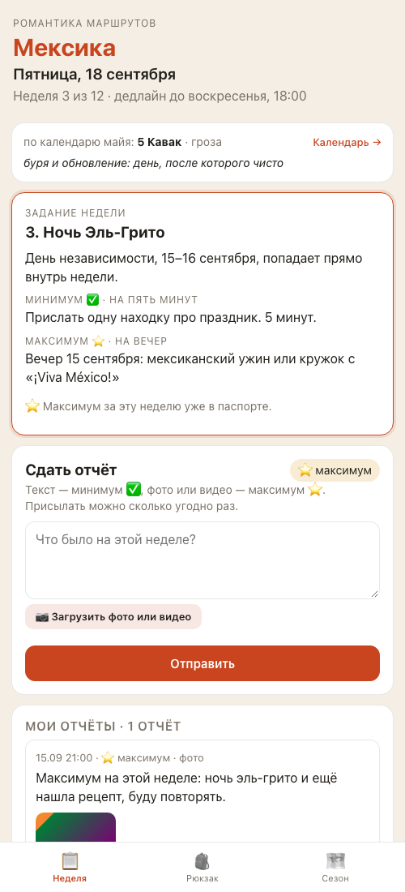
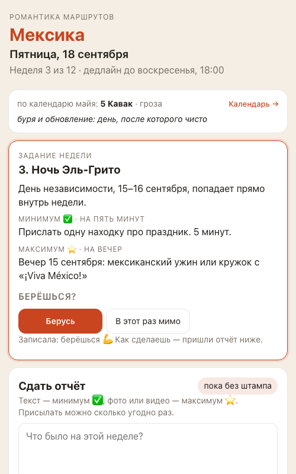
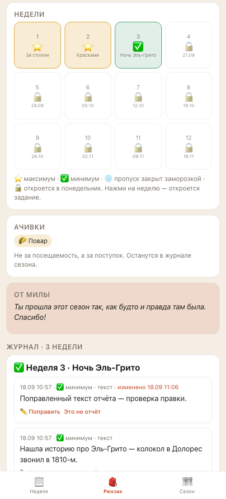
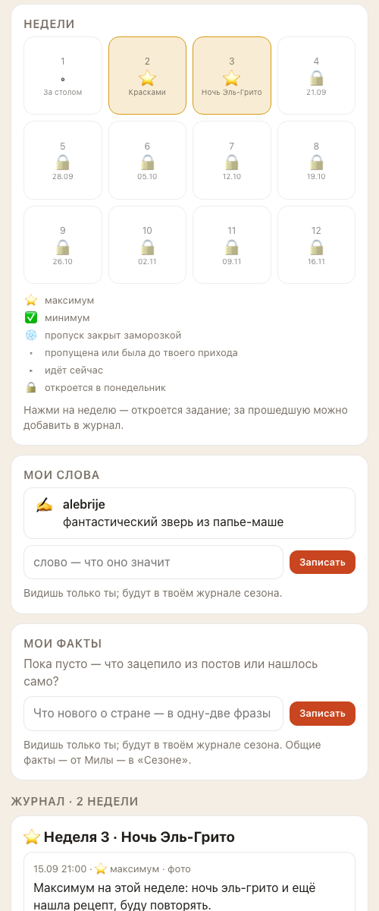
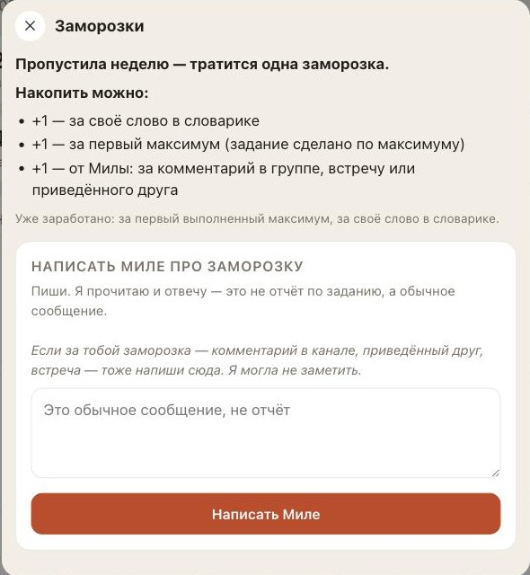
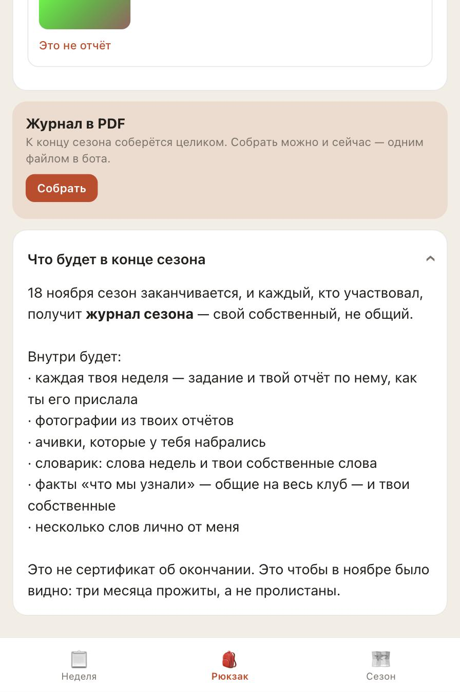
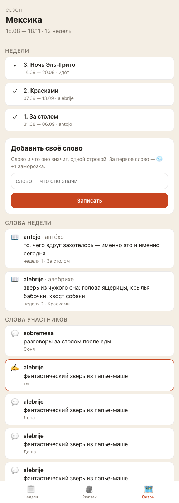
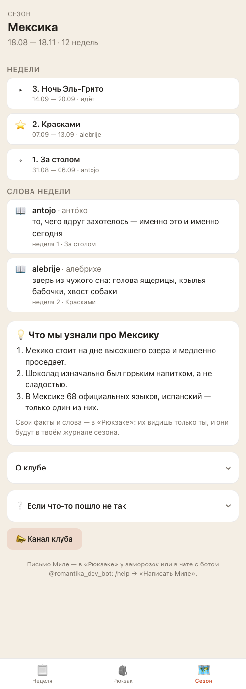
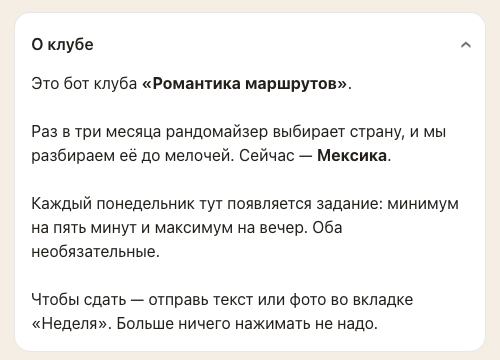

Твои правки 18 сентября — готово на стенде
Отчёт на вечер 18 сентября. Всё, что ты попросила поменять после выкатки, собрано одной задачей и проверено на стенде (тренировочной копии бота с придуманными участницами). Твоё «сливай выкатывай» уже есть; проверки перед выкаткой пройдены, дальше — живой прогон в настоящем Telegram и выкатка.
Что увидят люди: было → стало
Слева — экран Алисы, справа — Лены. Это разные придуманные участницы стенда, поэтому галочки и отчёты у них разные; смотри на устройство экрана.
«Неделя»: шапка и день


«Неделя»: две кнопки под заданием

«Рюкзак»: легенда, свои слова и факты


«Рюкзак»: лист «Заморозки» и «Что будет в конце сезона»


«Сезон»



Для тебя
- Тексты прошедших недель. Админка → «Задания» → неделя 1 или 2 → поля правятся → «Сохранить»; каждое сохранение видно в «Изменениях». То же в чате: «⚙️ Мила» → «Править задание» → в списке прошедшие недели с ✓. Даты недель менять по-прежнему нельзя — ни у прошедшей, ни у идущей, только тексты. Люди видят новый текст сразу — в листе недели и в журнале. Снимка админки в отчёте нет: правка проверена тестом и глазами на стенде; шаг 3 в конце страницы — это она.
- Карточка человека в «Людях» показывает его слова и факты с подписью «личные: видит только автор и ты». В общем списке «Что мы узнали» — только твои факты; в админке «Ещё» → факты — по-прежнему все.
- Две кнопки. Старые сообщения с «Попробую» продолжают работать — нажатие считается как «берусь». Кнопка «Берусь» на сообщении прошедшей недели больше ничего не записывает и не шлёт тебе уведомление, а у того, у кого штамп уже есть, бот вопрос не задаёт.
- Голое слово в чат («Паспорт», «Сегодня») — теперь отчёт со штампом, как обещает /help. Кнопки бот узнаёт по значку.
Что проверено и как
| Кто | Что делал | Итог |
|---|---|---|
| Автоматические проверки | Стиль и типы кода, 511 тестов на момент слияния (до задачи 508; три новых теста закрывают правку прошедшей недели, две кнопки и голое слово; личные слова и факты, одинаковый факт дважды и «Берусь» на прошедшей неделе дописаны в существующие); после правок перед выкаткой — 527 | зелёное |
| Помощник по коду | Читал каждую изменённую строку; искал, не утекают ли чужие слова и факты через какой-нибудь путь (приложение, бот, PDF, админка) | утечек нет; 5 важных мелочей закрыты — ошибка загрузки выглядела как «пусто»; твоя форма фактов обещала приватность (твои факты — общие, теперь так и написано); справка в админке; технический документ об устройстве; название недели после правки |
| Помощник по экранам | Два круга: все восемь пунктов задачи, нарочно неправильные действия, повторная прогонка старых сценариев (/start, задание, отчёт, паспорт, админка), чтение служебных записей бота | проходит; закрыты 3 важных: подзаголовок «Заданий» врал про прошедшие недели; одинаковый факт записывался дважды; «Берусь» на старом сообщении прошедшей недели и вопрос «берёшься?» после штампа |
Пять проверок перед выкаткой
Это второй круг — уже на общей ветке, перед самой выкаткой. Четыре помощника (код, экраны, данные, крайние случаи) плюс автопроверки. Нашли 14 важных вещей, все закрыты шестью маленькими правками; после правок каждый помощник прошёл по своему списку ещё раз — «проходит» у всех четырёх. Что было:
| Что нашли | Что сделала |
|---|---|
| Правила «Берусь / мимо» жили в двух местах: в приложении можно было ответить поверх штампа, и каждое повторное нажатие слало тебе уведомление (три нажатия — три сообщения) | Одно правило для кнопки в боте и для приложения: только идущая неделя, не после штампа, повтор того же ответа тебе не сообщается |
| Двойное нажатие делало копии: пять одинаковых фактов или слов при одновременных запросах (ноутбук и телефон, плохая связь) | Замок в базе на слова, факты и ответы «берусь» — второй запрос ждёт первый и видит его запись. Заодно закрыт старый баг с дублями слов |
| «Паспорт!», «Паспорт 🇲🇽», «Паспорт» в кавычках открывали паспорт вместо отчёта | Кнопку бот узнаёт по значку в начале; всё, что начинается с буквы, цифры или кавычки, — отчёт |
| Повторный факт в чате с ботом оставлял «режим факта» открытым — следующее сообщение (отчёт) записывалось фактом, без штампа | Как у слов: отказ закрывает режим и подсказывает «нажми „➕ Добавить свой факт“ ещё раз» |
| Название недели длиннее 255 знаков или служебный символ в тексте — в админке английская ошибка «Internal Server Error» | «Текст длиннее 255 знаков» по-русски; факт в боте, как и в приложении, — не длиннее 4000 знаков |
| Два первых запроса новенькой одновременно (две вкладки) — ошибка вместо экрана | Первая запись человека делается так, что второй запрос просто находит её; проверила три раза по 20 одновременных запросов — ни одной ошибки |
| Твоя форма факта в боте обещала «останется у тебя», хотя твои факты общие; «Берусь» на объявленной, но не начавшейся неделе молчал; в справке жирное «две заморозки» рвало предложение; «в группе» рядом с «в канале» | Тексты поправлены: тебе форма говорит «факт от тебя — общий»; кнопка отвечает «эта неделя ещё не открылась»; справка целая; везде «в канале» |
| Демо-данные стенда писали твои факты с автором — участницы на стенде не видели ни одного твоего факта (в настоящем боте всё пишется правильно; на проде фактов пока нет — проверила) | Стенд исправлен и перезалит; снимок «Сезона» выше — уже с твоими тремя фактами |
| Документы: в одном месте «прошедшие недели не редактируются», в другом — «редактируются»; «Попробую» осталось в описаниях; не записано, чем опасен откат | Всё сведено; в инструкции по проду записано: откат ниже этой версии снова сделает личные слова и факты общими — только с твоего слова |
Живой прогон в настоящем Telegram (тестовый бот-двойник @romantika_staging_bot, из твоего Telegram, как в прошлый раз): «/start» — новое приветствие; «Паспорт!» — «✅ Записала как минимум — штамп за неделю «Ночь Эль-Грито»», в базе стенда отчёт «Паспорт!» со штампом «минимум»; «⚙️ Мила» → «Задание недели» — в списке «✓ 1 · За столом», «✓ 2 · Красками», «▶ 3 · Ночь Эль-Грито»; приложение — шапка «Недели», «Рюкзак» с «Мои слова» и «Факты клуба» (три твоих факта) и журналом. В логах стенда за прогон — ни одной ошибки.
После правок: 527 автоматических тестов из 527 (было 511). Критики второго круга — цифрами: 20 одновременных одинаковых фактов → 1 запись и 19 отказов; 20 одновременных «Берусь» → одна запись, одно уведомление тебе; 40 одновременных открытий приложения разными людьми — 0,25 секунды, ошибок 0; ни одной строки «Traceback» в логах стенда за прогон.
Что осталось и чего не трогали
- Приёмочные проверки Димы я по правилам не трогаю. Две строки в них после твоих правок стали неверными: «три кнопки» и «голое слово — не отчёт». Ты сказала поправить — я поправила эти две строки и записала для Димы в свои заметки, чтобы он увидел.
- Ночного вида у приложения нет — одна светлая палитра, так было и раньше; если хочешь, отдельная задача.
- Не трогали: приём отчётов, штампы, заморозки (правила), напоминания, поздние отчёты (03). Данные: ничего не удалено; чужие слова и факты, которые люди уже добавили, остались в базе — просто теперь их видит только автор.
Что дальше
Живой прогон с тестовым ботом (напишу ему из твоего Telegram, как в прошлый раз), выкатка. После — с телефона:
- «🎒 Открыть клуб» → «Неделя»: шапка, день одной строкой, две кнопки под заданием (если минимум ещё не сдан).
- «Рюкзак» → «как заработать ещё?» → лист; закрой его крестиком — ниже на «Рюкзаке» будут «Мои слова» и «Факты клуба» (у тебя блок так называется, потому что твои факты общие; у участниц он — «Мои факты»).
- Админка → «Задания» → «2. Красками» → «Максимум» → напиши «рисунок свой» → «Сохранить».
- Чат: напиши боту «Паспорт» — придёт «✅ Записала как минимум» (это теперь отчёт). Если не хотела — нажми «Это не отчёт».
Если всё хорошо — напиши мне «всё ок». Если нет — скажи словами, что увидела.